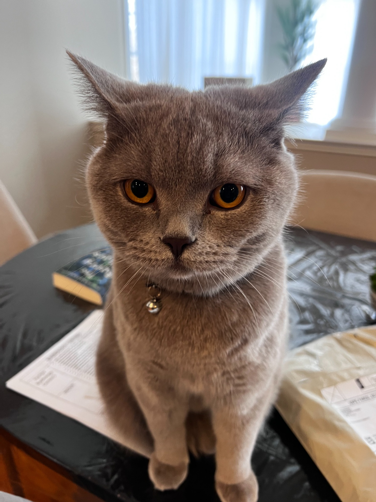

About Me
I’m Saja, a master’s student in Human-Computer Interaction at the University of Maryland. I studied Cognitive Science at UConn, with a minor in Software Design & Development.
As a kid, I was fascinated by how people think and interact with the world. I used to describe myself as “hyper-aware” because I was always noticing small details and wondering why people did things a certain way.
That curiosity led me toward UX design. I like being able to connect psychology and technology, understand someone’s experience, and work through how a design could make it easier.
My Background
I took part in an ethnographic field study in Mauritius, using interviews and participant observation to learn about ritual, memory, and identity. It gave me a chance to explore the questions I’d always been interested in: how people make sense of their experiences, and how the world around them shapes the way they think.
I’m a proud Sudanese American, and family is important to me. My background also shapes my interest in accessible design, including experiences that consider different languages and contexts. Nile Health Network gave me a way to explore that through English and Arabic layouts.
My design experience includes research planning, interviews, surveys, synthesis, wireframes, and interface design. I work in Figma and build with HTML, CSS, and JavaScript.
Outside of Design
I spend a lot of my summers traveling. I enjoy getting to know new places, and Mauritius is one of the places where travel and my academic interests came together.
I also play tennis, do Pilates, and work out. I love music, enjoy matcha, and value time with my family.
Mylo
This is Mylo, my British Shorthair.

Contact
Interested in working together? Get in touch.
saja2004.lutfi@gmail.com